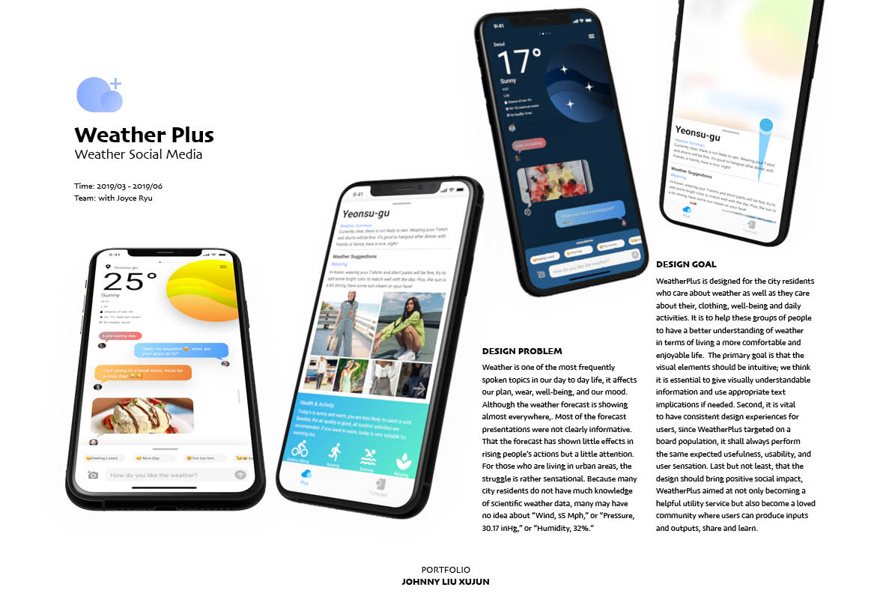
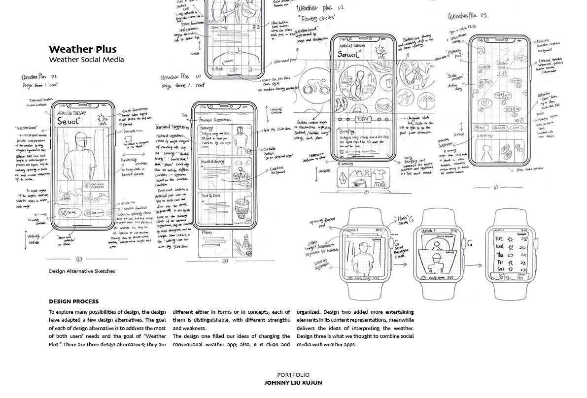
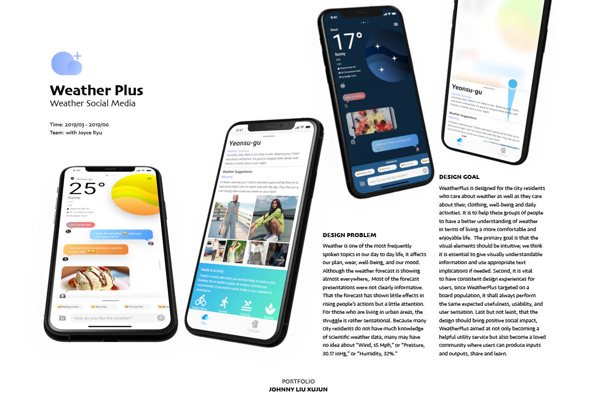
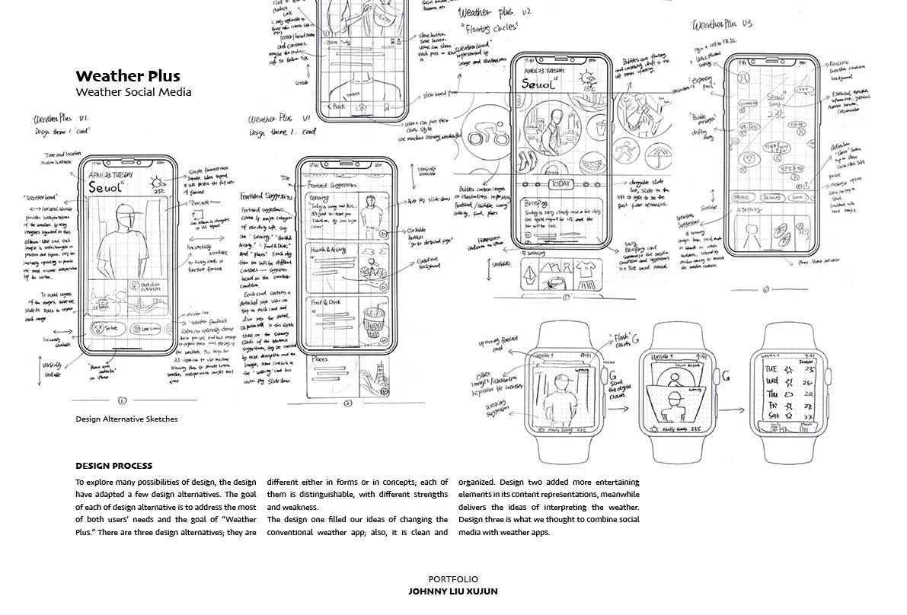
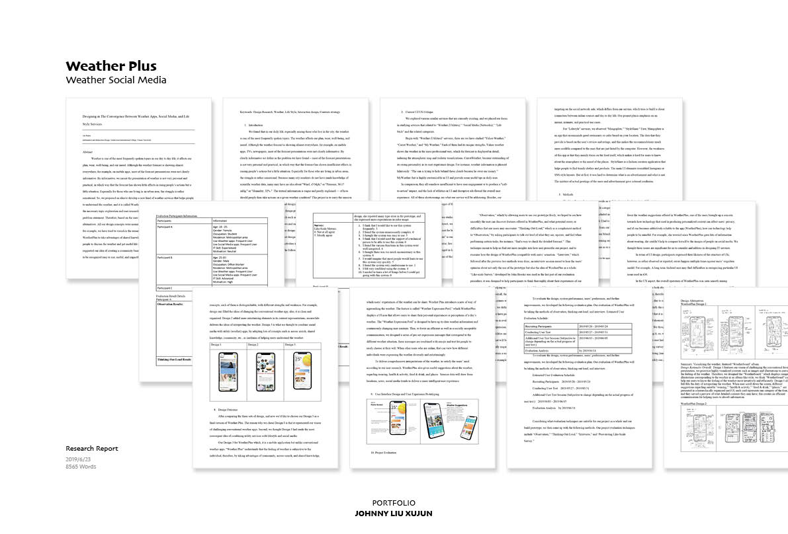
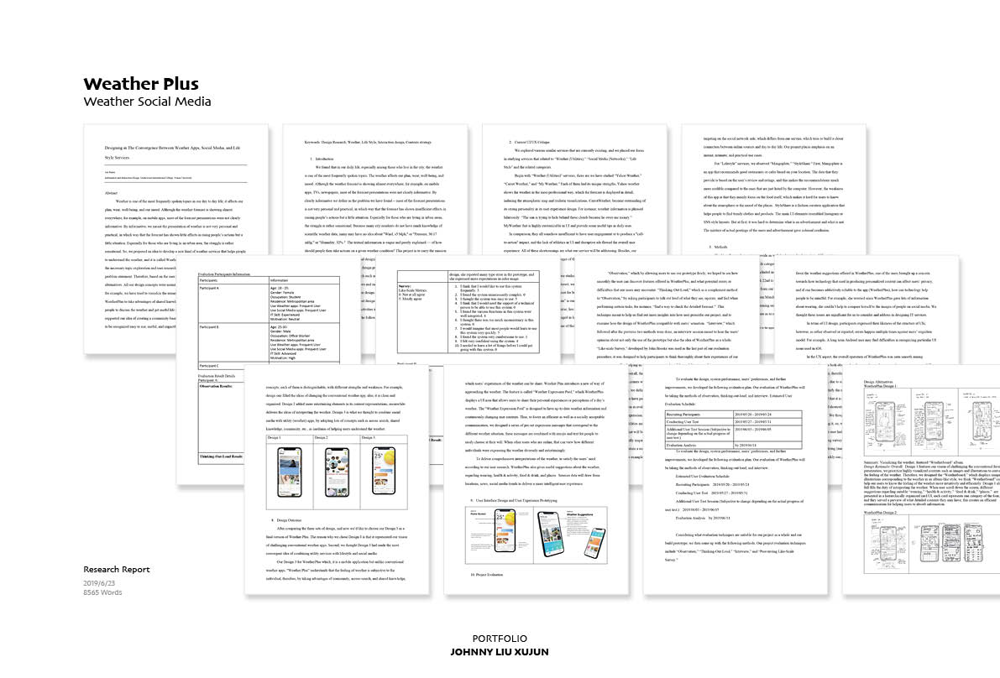
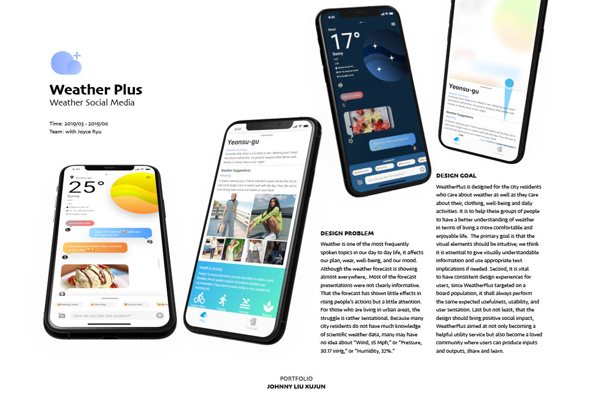
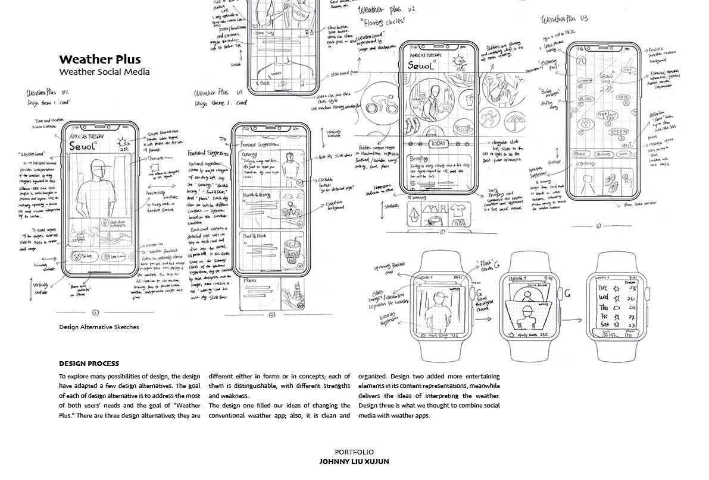
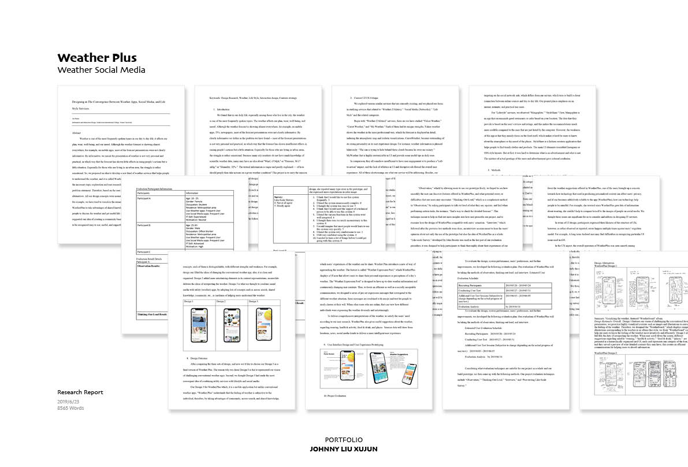

Full Documentation
 



 


- Helping users understand weather, decoding the meaning of weather digits.
- Coresssearch in online communities, daily weather tips shared by locals.
- Utility services meets social media, bring local business new opportuntinies.
Weather is one of the most frequently spoken topics in our day to day life, it affects our plan, wear, well-being, and our mood. Although the weather forecast is showing almost everywhere. Most of the forecast presentations were not clearly informative. That the forecast has shown little effects in rising people’s actions but a little attention. For those who are living in urban areas, the struggle is rather sensational. Because many city residents do not have much knowledge of scientific weather data, many may have no idea about “Wind, s5 Mph,” or “Pressure, 30.17 inHg,” or “Humidity, 32%.”
WeatherPlus is designed for the city residents who care about weather as well as they care about their, clothing, well-being and daily activities. It is to help these groups of people to have a better understanding of weather in terms of living a more comfortable and enjoyable life. The primary goal is that the visual elements should be intuitive; we think it is essential to give visually understandable information and use appropriate text implications if needed. Second, it is vital to have consistent design experiences for users, since WeatherPlus targeted on a board population, it shall always perform the same expected usefulness, usability, and user sensation. Last but not least, that the design should bring positive social impact, WeatherPlus aimed at not only becoming a helpful utility service but also become a loved community where users can produce inputs and outputs, share and learn.


